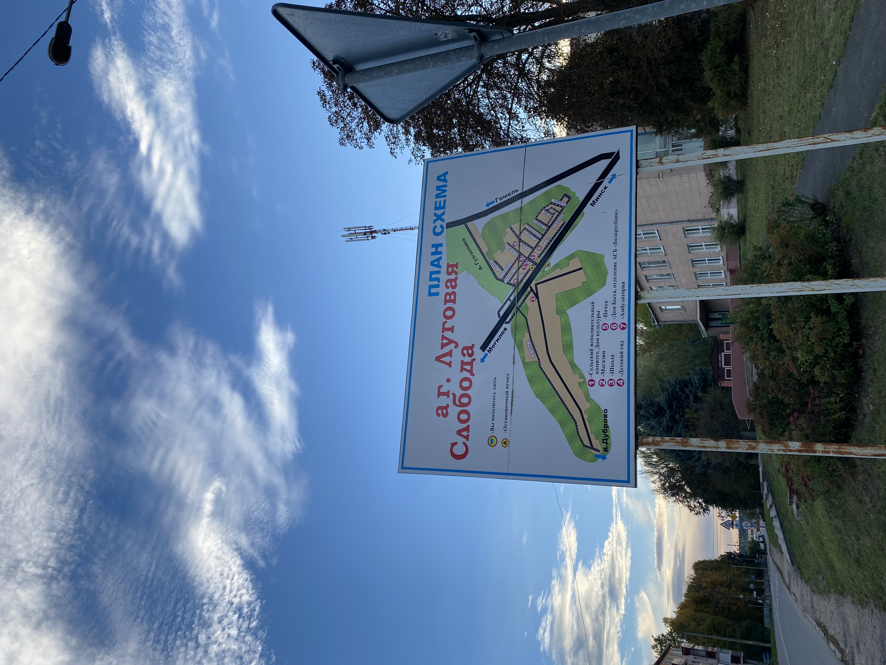

<html>
    <head>
        <title>Расположение</title>
        <meta http-equiv="content-type" content="text/html" charset="UTF-8">
         <!--Стиль для обтекания текста-->
    <style>
        .left{
            float: left;
            margin: 7px, 7px, 7px, 0px;
        }
        .right{
            float: right;
            margin: 7px, 7px, 7px, 0px;
        }
    </style>
    <!--Задний фон-->
    <style>
        body {
          background: url('фон.avif');
          background-repeat: repeat;
          background-size: cover;
        }
        </style>
       <!--Расположение текста по центру-->
 <style>
 .text-center {
    text-align: center;
    
  }
  </style>
  <!--Картинки по цетру с подписью-->
<style>
    .pic {
     display: block; 
     text-align: center; /* Выравнивание по центру */
     font-style: italic; /* Курсивное начертание */
     margin-top: 0; /* Отступ сверху */
     margin-bottom: 5px; /* Отступ снизу */
     color: #666; /* Цвет подрисуночной подписи */
    }
   </style>

    </head>
</html>

<body class="body">
    <h1 class="text-center">Расположение</h1>
    <!--Картинка с въезда в слободу-->
    <p>Прямо на въезде в Луговую Слободу вас встречает схема агрогородка. Тут можно увидеть названия улиц, основные обознаяение, построения и общую территорию агрогородка.
        <br>Агрогородок располагается недалеко от Минска (13км), что очень удобно, но с транспортом у нас всё равно проблема: иногда автобусы вовсе не приезжают.
    </p>
    

</body>